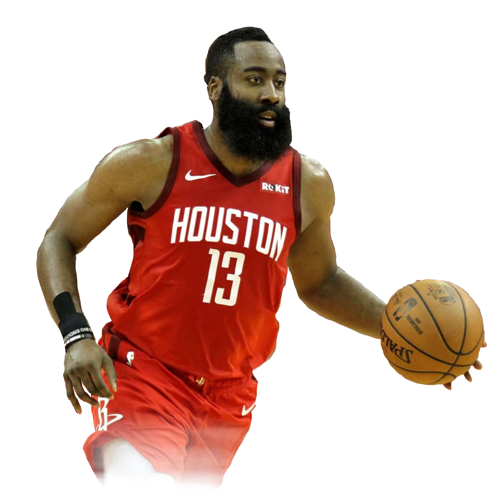

|
The MVP or Most Valuable Player award is one of the most coveted and respected personal achievements a player can obtain. Each year, two or three significantly exceed league averages in terms of player statistics and exemplify the pinnacle of leadership a player in the NBA, the National Basketball Association. This past 2018-2019 season, NBA consumers witnessed the emergence of a star, Giannis Antetokounmpo, and a scoring frenzy in James Harden. Though Antetokounmpo won the 2019 League MVP award, critics and fans argue that Harden should have won the award. We will now present our piece on why Giannis Antetokounmpo deserved the 2019 NBA MVP award over James Harden. |

|
| FG % (Field Goal Percentage) | The ratio of field goals made to field goals attempted. A higher field goal percentage denotes higher efficiency. Field goal percentage does not completely tell the skill of a player, but a low field goal percentage can indicate a poor offensive player or a player who takes many difficult shots. |
| FT % (Free Throw Percentage) | INFO |
| PIE (Player Impact Estimate) | In its simplest terms, PIE shows what % of game events did that player or team achieve. The stats being analyzed are your traditional basketball statistics (PTS, REB, AST, TOV, etc..) A team that achieves more than 50% is likely to be a winning team. A player that achieves more than 10% is likely to be better than the average player. |
| EFG (Effective Field Goal Percentage) | Its goal is to show what field goal percentage a two-point shooter would have to shoot at to match the output of a player who also shoots three-pointers. |
| Net Rating | Net rating is the offensive rating minus the defensive rating, but simply put it can be defined as how much better or worse the team is when a specific player is on the court. |
| RB % (Rebound Percentage) | statistic to gauge how effective a player is at gaining possession of the basketball after a missed field goal or free throw. Rebound rate is an estimate of the percentage of missed shots a player rebounded while he was on the floor. |